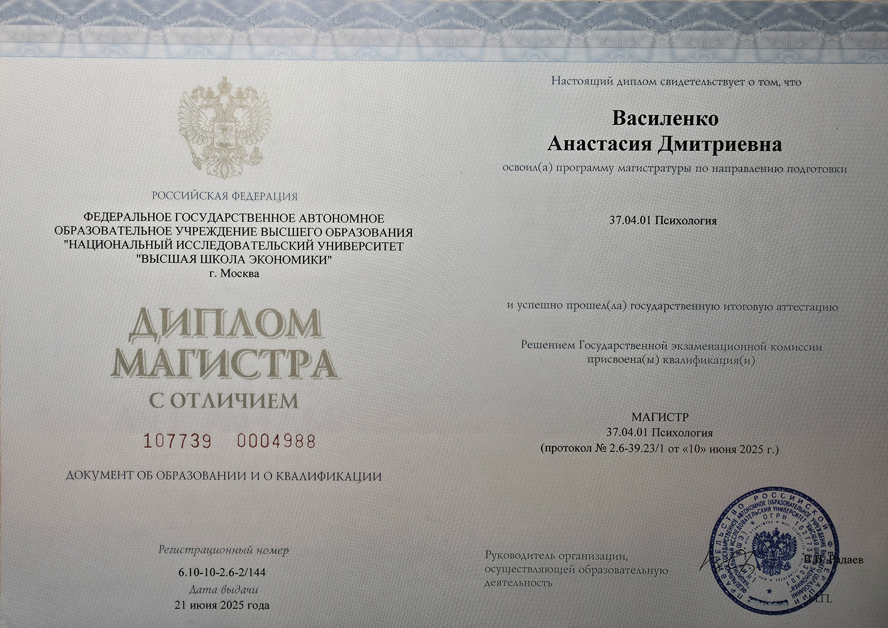
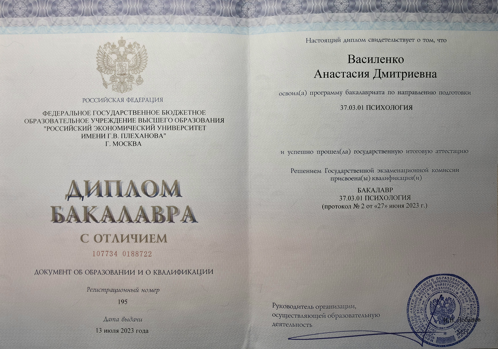

Анастасия Василенко
Психоаналитически ориентированный психотерапевт
«На риск психоанализа идут те, кто заинтересован в нанесении на карту неизвестных континентов своей души».
Психоаналитическая терапия
Психоаналитическая терапия — это пространство бережного исследования внутреннего мира, где мы вместе обращаемся к тому, что не всегда осознаётся, но заметно влияет на Ваши чувства, выборы и взаимоотношения.
Работа в психоаналитическом подходе предполагает погружение в мир бессознательного, где через свободные ассоциации, сны, фантазии, оговорки и особенности отношений между нами постепенно проявляются внутренние конфликты, вытесненные переживания и давний эмоциональный опыт, который продолжает звучать в настоящем.
«Психоанализ - это не поиск истины, а создание нового смысла в диалоге между аналитиком и пациентом».
Терапевтическая сессия — это разговор, в котором важны любые ваши мысли и чувства, даже если они кажутся «странными», «лишними» или «неподходящими». Я помогаю замечать повторяющиеся темы и скрытые смыслы, поддерживаю в соприкосновении с трудными чувствами и аккуратно связываю происходящее сейчас с вашими ранними историями и отношениями.
Такая работа позволяет лучше понять «почему со мной это происходит», вернуть себе право выбирать, а не действовать автоматически из старых сценариев, освободить запертую энергию и выстроить более живые и устойчивые отношения с собой и другими.
«История — это не просто прошлое, а живая сила, которая продолжает влиять на наше настоящее».
С чем я работаю
Темы, с которыми мы можем бережно разобраться вместе
Трудности в отношениях
Сложности в построении межличностных отношений, конфликты, одиночество.
Проблемы с родителями
Сепарация, незавершённые конфликты, обиды и выстраивание границ.
Страхи и тревожность
Фобии, панические атаки, хроническое беспокойство и депрессивные состояния.
Переживание потери
Проживание горя, утрата близкого человека, развод или расставание.
Низкая самооценка
Неуверенность в себе, синдром самозванца, трудности в отстаивании своих интересов.
Истощение и прокрастинация
Эмоциональное и физическое истощение, отсутствие жизненных сил, выгорание.
Условия работы
- ✦ Длительность одной сессии — 50 минут.
- ✦ Формат работы: очно и онлайн.
- ✦ Стоимость сессии: 3500₽ (есть места по льготным ценам) .
- ✦ Пропущенные сессии оплачиваются (правила отмен обсуждаются индивидуально).
- ✦ Первые 3–5 встреч — диагностические. По их итогам мы принимаем решение о долгосрочной работе.
- ✦ Встречи проходят не реже 1 раза в неделю. За вами закрепляется фиксированный день, место и время.
- ✦ Работаю только с совершеннолетними клиентами.
Мои принципы
-
Этика и безопасность
Полная конфиденциальность, анонимность, уважение, честность и бережное отношение к клиенту.
-
Непрерывное развитие
На регулярной основе прохожу супервизии и повышение квалификации.
-
Личная терапия
Имею опыт собственной длительной терапии в аналитическом методе — более 150 часов. Это залог того, что специалист отделяет свои процессы от процессов клиента.
Образование
Высшее психологическое образование (Магистратура)
НИУ ВШЭ, программа «Психоанализ и психоаналитическая психотерапия»
Высшее психологическое образование (Бакалавриат)
РЭУ им. Г. В. Плеханова, программа «Психология управления»
Дополнительное образование
Семинары и курсы психоаналитиков — членов Международной психоаналитической ассоциации IPA (Рене Руссийон, Вассилис Капсамбелис, Дональд Кэмпбелл, Марк Солмс, Ален Жибо, Джузеппе Чивитарезе, Жаклин Шаффер, Ева Вейл, Руджеро Леви, Алан Эриль и др.).


Диплом магистра с отличием
НИУ ВШЭ · 2025


Диплом бакалавра с отличием
РЭУ им. Г. В. Плеханова · 2023
Связь со мной
Вы можете написать мне напрямую в удобный мессенджер, и я отвечу вам в ближайшее время.